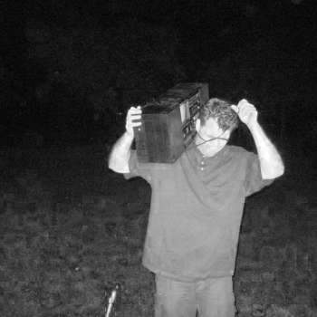

Was ist das hier?
Unter den Seiten, die sich mit der Produktion von elektronischer Musik - gleich welcher Art - beschäftigen,
sticht eine Website besonders hervor. Producer-Network richtet sich seit 1999 an Einsteiger und hilft
ihnen beim Einstieg. Es war ein angesehenes deutsches Portal für Tutorials und Tipps von Produzenten für
und von Produzenten. Wir pflegen hier die Geschichte und bewahren einige Erinnerungen aus der guten alten Zeit.
Among the sites dealing with the production of electronic music - of whatever kind - one website stands out
in particular. Producer-Network has been targeting beginners and helping them get started since 1999. It was a
respected German portal for tutorials and tips from producers for and by producers.
Producer Network on Discord
XitriX
Ingo war ein Musiker und begeisterter PN Forum Nutzer der ersten Stunde. Leider weilt er nicht mehr unter uns. Danke für die Musik und rest in peace Ingo.
Besucht Xitrix auf Soundcloud
Polarity
Polarity ist Gründer des Producer Networks. 1999 versuchte er mehre kleine Produzenten auf einer Seite zu vereinen und die Idee des Producer Networks war geboren.
Youtube
| Discogs
| Bandcamp
| Spotify
Skyence
Vollgepackt mit Leidenschaft, Geduld und Ehrgeiz. Skyence war dabei von Anfang an und ist heute immer noch als Produzent bei Skyence und Zen Audio unterwegs.
Discogs
| Bandcamp
| Spotify
Jericho
Dawless & Analog. Jericho war frühes Mitglied im Producer Network und ist heute noch aktiv im Eurorack & Ebay Kleinanzeigen Business.
Bandcamp
| Soundcloud
| Youtube
Wellnesspunk

Bedeutungsschwanger und macht bestimmt keine Musik wie Fast Food. Wellnesspunk, dafe, crystalbeats ist seit besonic zeiten dabei.
Soundcloud
| Facebook
Turrican
Vinyl for life. Dj und Radio Host straight outta Grünstadt. Tiefer als Limbo und immer am Puls der Zeit.
website
| mixcloud
| Facebook
Cyrilla
Neuroqueen & Senior Dj in den Berliner Clubs. Harter und tiefer Drum & Bass wie er sein muß.
soundcloud
| mixcloud
| Facebook
Cruel Culture
Phace
Mefjus
Misanthrop
Erdbeerschnitzel
Bad Matter
Current Value
Rob Acid
Hi-Lar
Shroombab
Body & Soul
Typecell